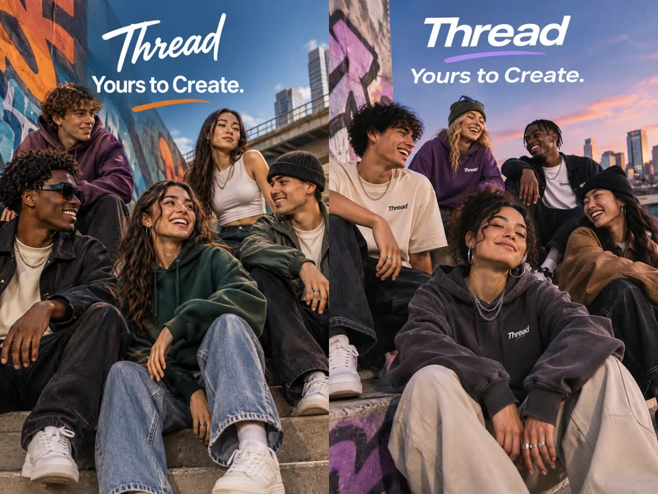

GPT Image 2.6 official streetwear campaign for a fictional brand "Thread": friends on graffiti-wall steps with the tagline "Yours to Create." rendered once
WRD-070WardrobeGPT Image 2.6 (Flare + Sunburst; OpenAI official prompting guide example)by OpenAI (official "GPT Image 2.6 prompting guide")2026-11-08

OpenAI's exact-text ad example, framed as a fashion campaign brief: the brand and tagline are quoted, the audience and tone are named ("stylish, contemporary, energetic, and tasteful"), and the styling is left to "premium fashion photography cues". Constraints are short: render the tagline exactly once, no extra text, no watermarks, no unrelated logos. The outputs dress a group of adult friends in layered streetwear (hoodies, workwear jackets, wide denim, beanies, chains) at golden hour. A clean pattern for streetwear lookbook/ad frames with on-image copy.
Prompt
Give me a cool in culture ad / fashion shot for a brand called Thread. It's a hip young street brand. The ad shows a group of friends hanging out together with the tagline "Yours to Create." Make it feel like a polished campaign image for a youth streetwear audience: stylish, contemporary, energetic, and tasteful. Use clean composition, strong color direction, natural poses, and premium fashion photography cues. Render the tagline exactly once, clearly and legibly, integrated into the ad layout. No extra text, no watermarks, no unrelated logos.
Our Seedance 2.5 adaptation
[ADAPTED for Seedance 2.5 by Grok Bot; not the creator's prompt. Follows the official BytePlus Seedance 2.5 prompt guide and its official sd25-pe prompt-optimizer skill: parameters only on the API line (not in the prompt body), subject + action + scene, then visuals, camera (move, subject, start, direction, arrival) and sound; only the source's own exclusions are kept.] API: duration 8, ratio 9:16, resolution 1080p, generate_audio true. 【Subject】A group of five stylish adult friends in layered streetwear: oversized hoodies, workwear jackets, wide-leg denim, beanies and silver chains. 【Action】0-5 s: they sit on concrete steps in front of a graffiti wall at golden hour, laughing and nudging each other; one leans back on his elbows. 5-8 s: the image holds as the white tagline "Yours to Create." fades in once, centred in the upper third. 【Camera】Low angle, slow arc from left to right across the group, arriving on a centred group composition for the tagline. 【Visuals】Polished fashion-campaign photography, clean composition, strong colour direction, natural poses. Render the tagline exactly once, clearly and legibly. No extra text, no watermarks, no unrelated logos. 【Sound】Upbeat lo-fi beat, city ambience, light laughter.
Tags: streetwear campaign, fictional brand, exact tagline, ad layout, group styling, hoodies, wide-leg denim, golden hour, graffiti wall, typography